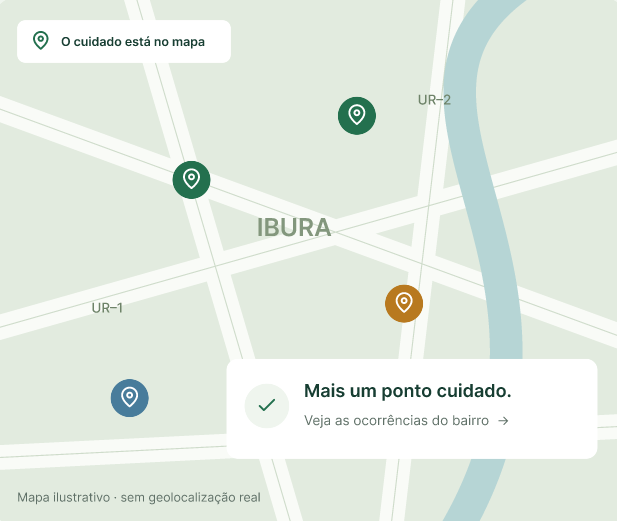

IBURA, RECIFE / PE
Um bairro mais limpo
começa com a
sua participação.
Viu descarte irregular? Registre o local, acompanhe a solução e ajude a cuidar das ruas e dos canais do Ibura.
Seus dados pessoais não aparecem no mapa público.

SIMPLES PARA VOCÊ. MELHOR PARA TODOS.
Da sua denúncia à transformação.
01
Registre o problema
Informe o local e adicione uma foto ou descrição do descarte.
02
Acompanhe cada etapa
Guarde seu protocolo e consulte o andamento da ocorrência.
03
Veja o resultado
Confira a conclusão do atendimento e continue cuidando do bairro.
O Ibura é a nossa casa.
Vamos cuidar dele juntos?
Sua participação ajuda a proteger a saúde, as ruas e os canais do bairro.
DESCARTAR CERTO TAMBÉM É CUIDAR
O destino certo faz toda a diferença.
01 / COLETA DOMICILIAR
Qual é o dia da coleta na sua rua?
Consulte os dias e horários antes de colocar o lixo para fora. Não é preciso entrar.
02 / PONTO DE DESCARTE
Conheça a EcoEstação Ibura
Rua Rio Tapado - Ibura, Recife / PE
Antes de ir, confira os materiais aceitos, os limites de entrega e os horários nos canais da Emlurb.
Consultar orientações de descarte
TRANSPARÊNCIA NO DIA A DIA
Acompanhe o cuidado com o Ibura.
Ver todas as ocorrências
Cada registro ajuda a tornar os pontos de descarte visíveis.
#IB-2026-0142
Resíduos próximos ao canal
Canal Três Carneiros
Em atendimento
Ver detalhes
#IB-2026-0141
Descarte em via pública
Rua Rio Prado
Em análise
Ver detalhes
#IB-2026-0140
Acúmulo de resíduos na calçada
Rua Rio Tapado
Resolvida
Ver detalhes
Demonstração: protocolos e ocorrências fictícios para apresentar o sistema.